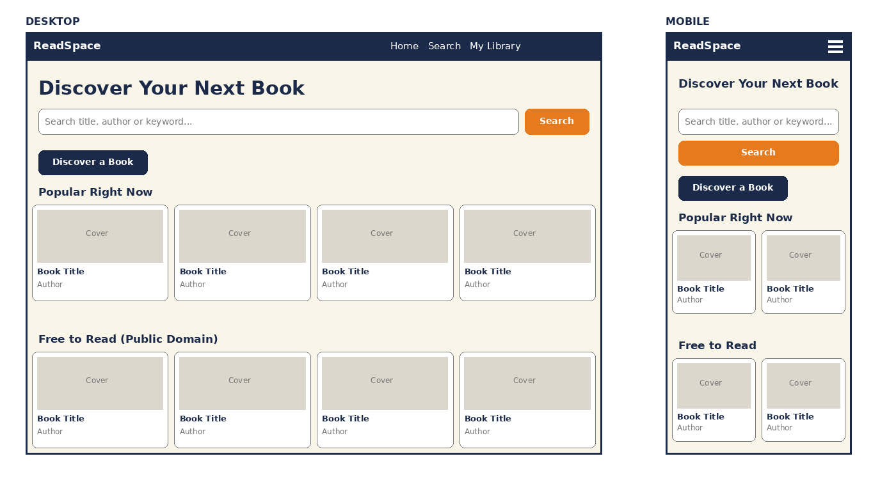
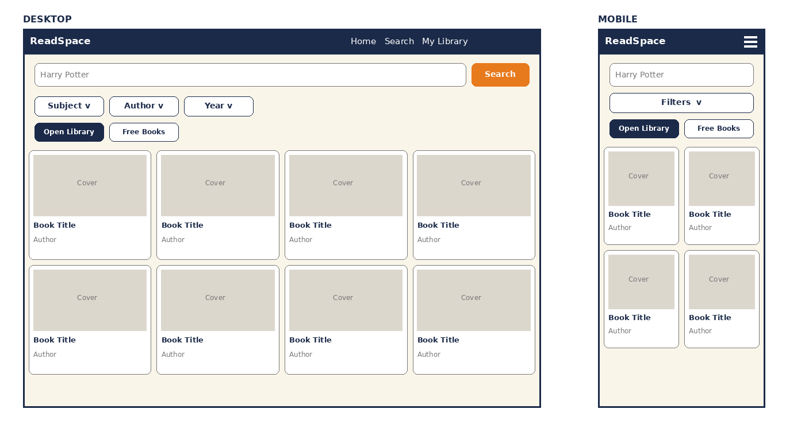
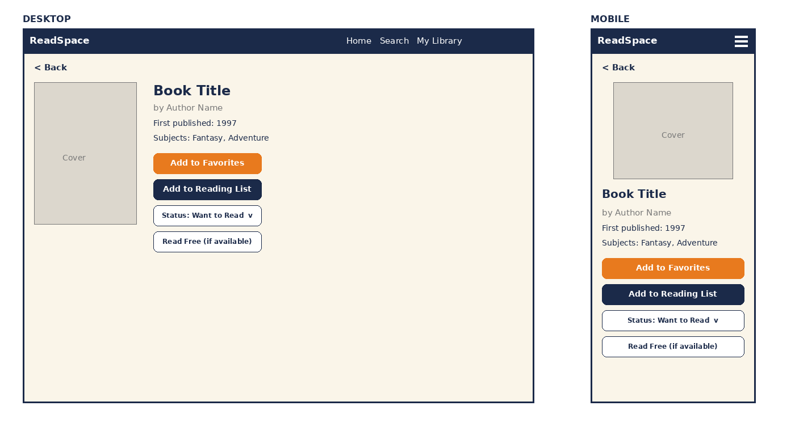
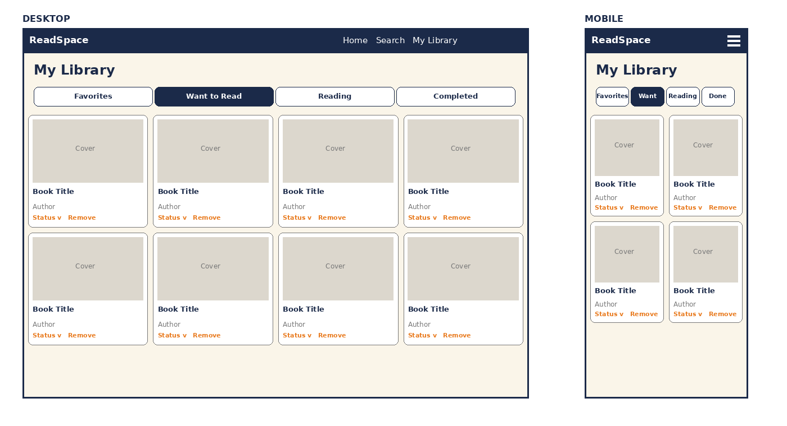

Site Name
Name: ReadSpace
Reasoning: Finding a book, finding a free copy, and remembering what you want to read or have finished usually means juggling several websites, notes or apps. The name says what the site is: one space for reading. ReadSpace puts all of it in one simple place.
Overview
ReadSpace is a web application that lets people search for books, learn about them, find free public-domain books, and keep a personal library with reading progress. It also covers the main skills of this course: working with APIs, handling data, saving user data in the browser, and building a responsive interface.
Target Audience Scenarios
ReadSpace is for students, casual readers and anyone who wants help choosing what to read next. The site should answer questions like these:
- "I need to read a classic for class and I can't afford to buy it. Where can I find a free copy?"
- "I don't know what to read next. Can I browse a subject or get a random suggestion?"
- "I want to keep track of what I'm reading and what I've finished, without creating an account."
Major Functions
- Book search. Type a title, author or keyword and see results from Open Library as cards with cover, title and author.
- Book details. Open a card to see a larger cover, author, first publication year and subjects.
- Filtering. Narrow results by subject, author and publication year without a new search.
- Favorites. Save a book to a favorites list stored in localStorage and remove it any time.
- Reading list and status. Add books to My Library and mark each one Want to Read, Reading or Completed.
- Public-domain discovery. Browse or search free Project Gutenberg books through Gutendex and open or download them.
- Discover a Book. One button picks a random book from popular subjects.
- Responsive interface. The layout adapts to mobile, tablet and desktop, with a menu button on small screens and one to four cards per row.
- Error and empty states. Friendly messages for no results, missing covers or a failed request, with a retry option.
Wireframes
Each wireframe shows the desktop layout on the left and the mobile layout on the right. Tablet uses the desktop structure with fewer columns. The wireframes were drawn before the site colors were finalized, so refer to the color section below for the final look.




External Data
APIs
| API | What I will use | Notes |
|---|---|---|
| Open Library | Search (openlibrary.org/search.json?q=), work details, subject lists, and covers
(covers.openlibrary.org) |
No API key. Some results lack covers or years. |
| Gutendex | Search public-domain books (gutendex.com/books/?search=) with authors, subjects and
download links |
No API key. Results come in pages. |
Data stored in localStorage
readspace_favorites: an array of saved books (id, title, author, cover URL, source).readspace_library: an array of books with a status ofwant,readingorcompleted, plus the date added.readspace_lastSearch: the last search and filters, so returning to results feels quick (optional).
Module List
| Module | Responsibility |
|---|---|
main.js |
Starts the app and connects the pages |
navigation.js |
Menu, active link, mobile toggle |
api/openLibrary.js |
Search and detail requests; cleans up the returned data |
api/gutendex.js |
Public-domain requests; formats download links |
search.js |
Search form, loading state, results |
home.js |
Popular books row on the home page |
filters.js |
Filter controls and filtering logic |
bookCard.js |
Builds a book card from normalized data |
details.js |
Details view and its buttons |
library.js |
My Library tabs, status changes and removal |
storage.js |
Read and write favorites and library in localStorage |
discover.js |
Random book logic |
utils.js |
Shared helpers (placeholders, text, errors) |
css/ |
base.css, layout.css, components.css |
Color Schema
The colors are shared with my Travel Burundi site so my projects feel like one family.
#115740Headers, navigation, headings and main buttons.#D12421Calls to action, links and interactive elements.#F9F6F0Main background on every page.#FFFFFFCards, with a soft shadow.#333333Body text.Typography
Heading Font: Montserrat (Bold)
A clean, geometric sans-serif for all titles and section headers (H1, H2, H3).
Body Font: Open Sans (Regular/Semi-Bold)
A highly legible sans-serif for paragraphs, lists and card text on both phones and desktop monitors.
Styling details
12px rounded corners on cards, 8px on buttons, an 8px spacing scale, and a visible focus outline for accessibility. Breakpoints: mobile up to 600px, tablet 601 to 1024px, desktop above 1024px.
Timeline
| Week | Planned deliverables |
|---|---|
| Week 5 | Repository and folder structure; shared layout; navigation; home page; Open Library module; search form and book cards working with real data. |
| Week 6 | Book details page; filters; localStorage module; favorites; reading list and status changes; My Library page with tabs. |
| Week 7 | Gutendex module and free-books view; Discover a Book; responsive and accessibility polish; error states; testing on mobile and desktop; deploy and final fixes. |
Challenges
- Combining two APIs. They return differently shaped data, so both are converted to one common book format.
- Incomplete data. Many books lack covers, years or descriptions, so the interface uses placeholders and defaults.
- Speed and errors. Requests can be slow or fail, so loading and error states are needed and needless calls avoided.
- Managing saved data. Favorites, list and status must stay consistent across pages.
- Responsive design. Cards, filters and the library need testing on small screens.
- Time. Ten features in three weeks is a lot, so core features come first and extras stay optional.